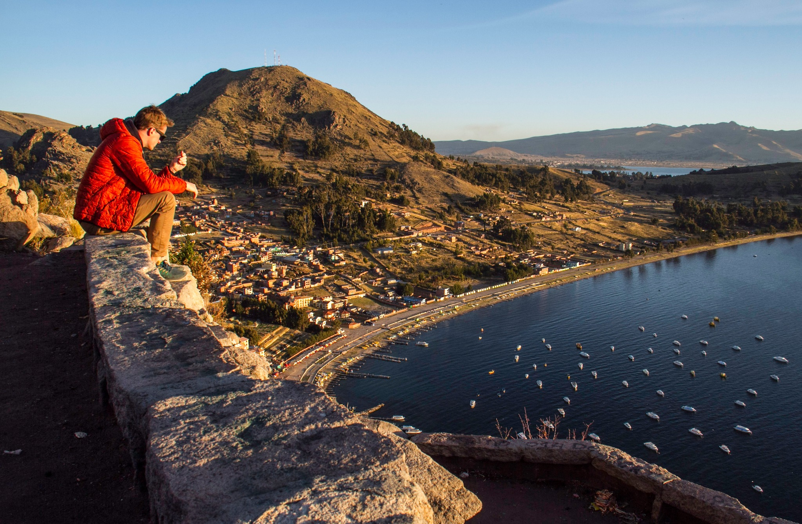

Semana Santa en Copacabana
En Semana Santa en Copacabana, Bolivia, puedes visitar la Basílica de Nuestra Señora de Copacabana y el Monumento de las Tres Cruces.
Basílica de Nuestra Señora de Copacabana
- Visitar la Basílica de Nuestra Señora de Copacabana, una de las atracciones más destacadas de Copacabana
- Conocer el Monumento de las Tres Cruces, un símbolo religioso que representa el Calvario bíblico
Monumento de las Tres Cruces
Ubicado en el atrio de la Basílica de Copacabana
Representa el Calvario bíblico, con Jesús crucificado en el centro y los dos ladrones a los costados
Otros lugares de interés en Copacabana Iñakuyu (Isla de la Luna), Pilkokaina (Isla del Sol), Pachataka (Copacabana), Chinkana (Isla del Sol).
Virgen de Copacabana
La Virgen de Copacabana, Nuestra Señora de Copacabana o Virgen Candelaria de Copacabana es una advocación mariana venerada en Copacabana. Su fiesta se celebra el 5 de agosto.